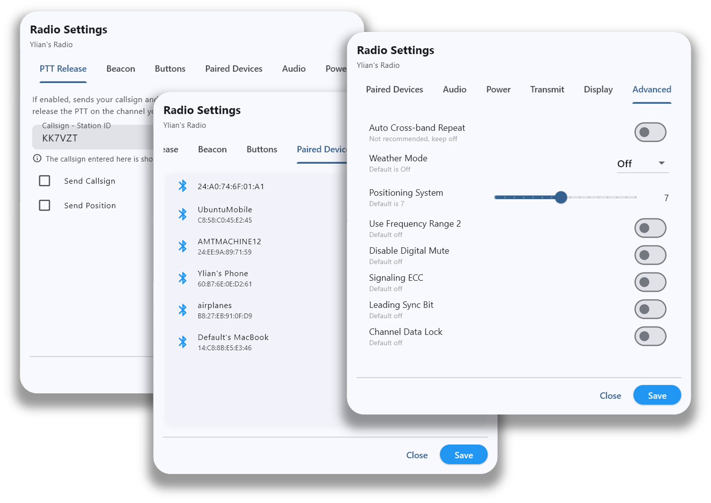
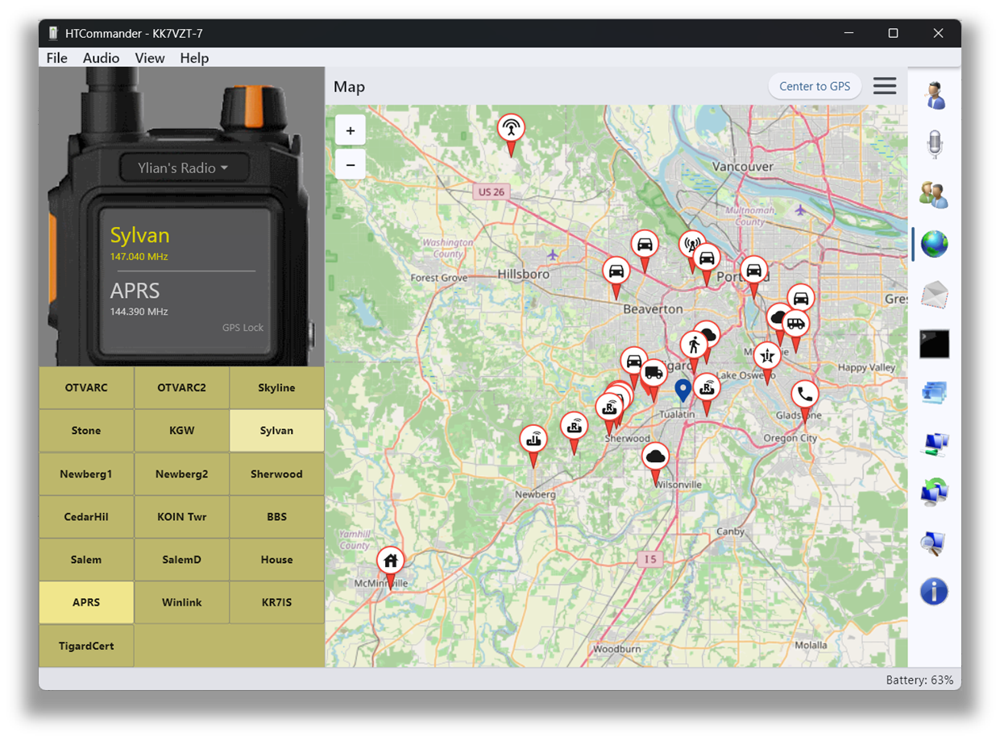
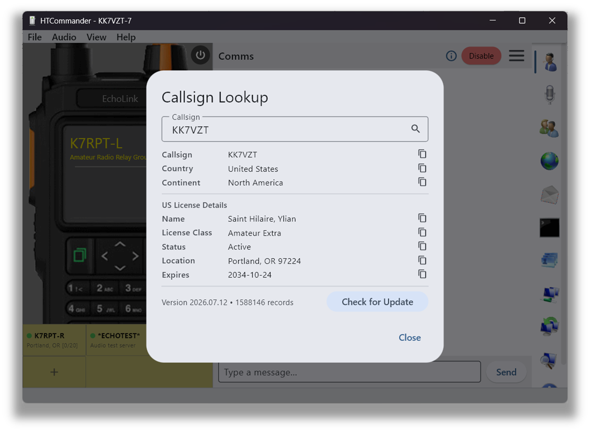
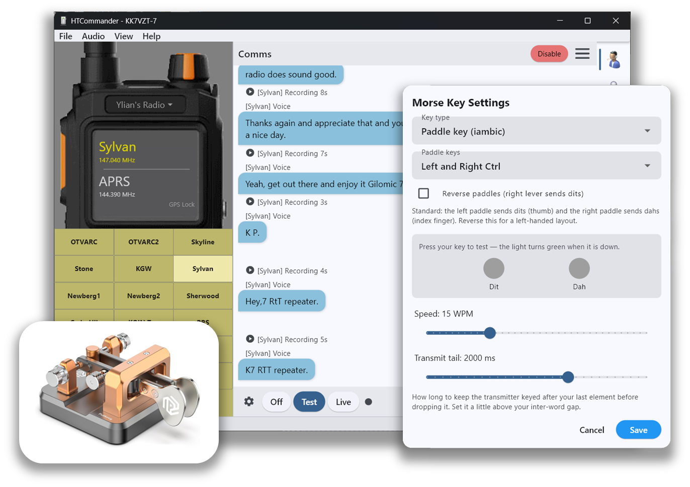
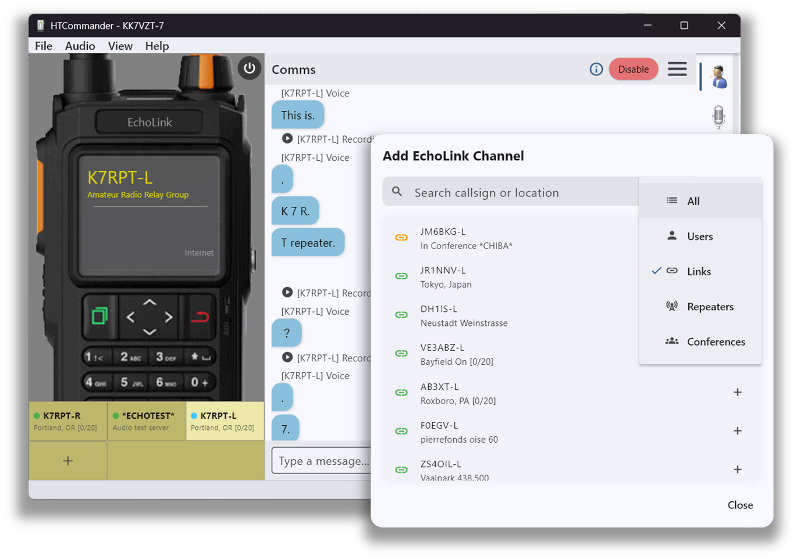
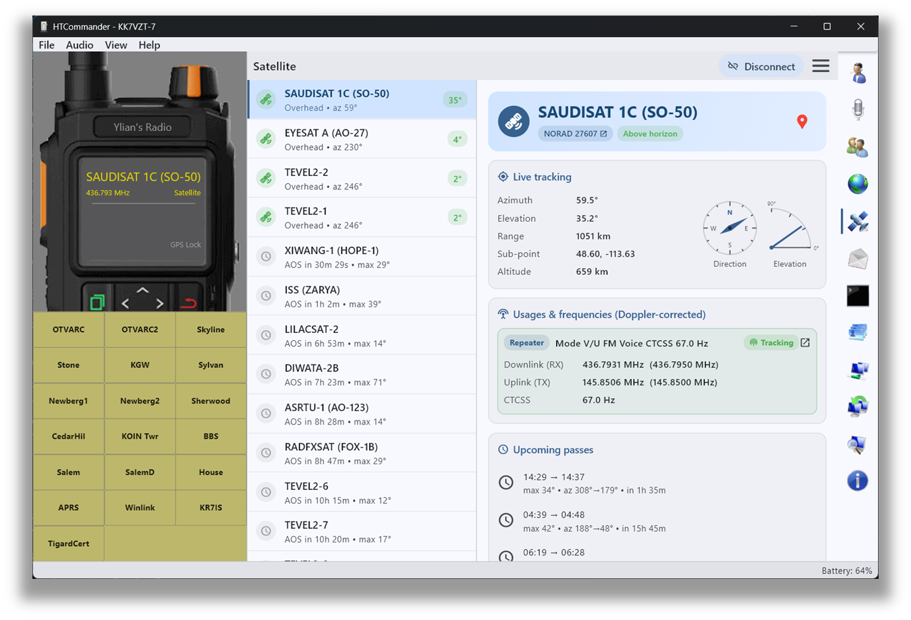
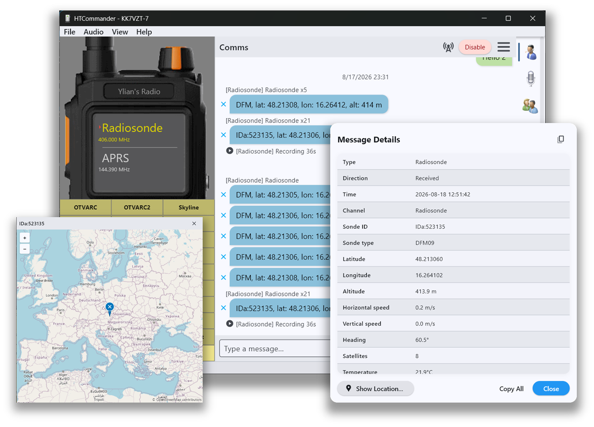
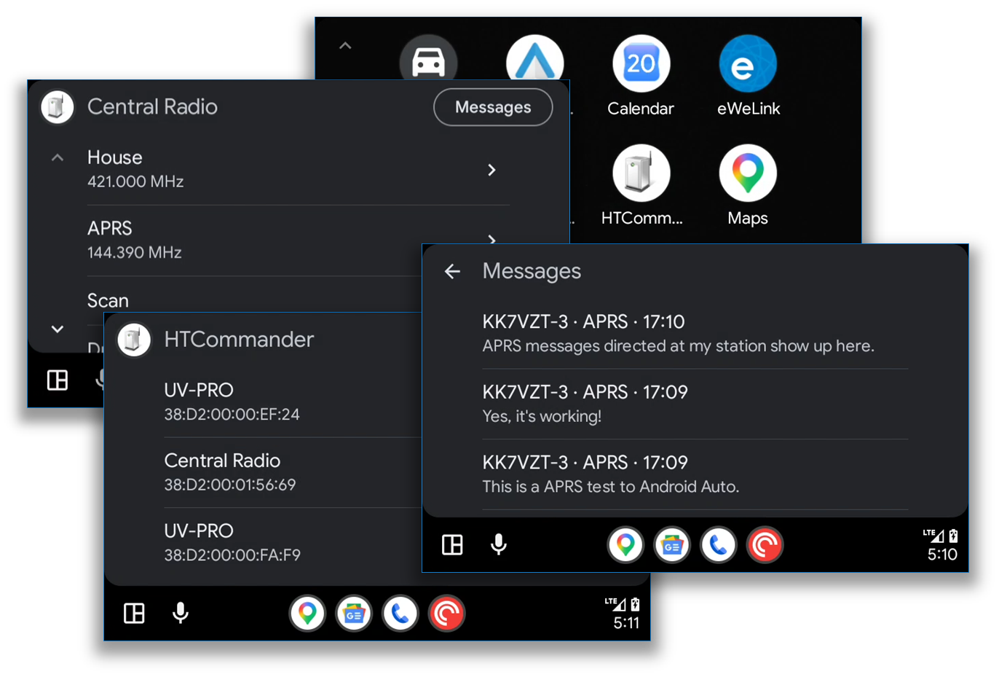

HTCommander packs a full station's worth of tools into one app — channel programming, messaging and mapping, email and file transfer, a software-defined modem, audio and voice, and more. Here's what each one does, with links to the technical detail.
Channels · memories · sharing · settings
Dial in every channel by hand — name, receive and transmit frequencies, mode, bandwidth, power level and CTCSS/DCS tones — with a clean editor that mirrors exactly what the radio expects.
Read the docs →
Import channel lists from a file, then drag & drop entries straight into the radio's channel slots. Rearrange, copy and push a full memory bank to your handheld in seconds instead of keying each one on the radio.
Read the docs →
Send a channel to anyone on frequency as a tappable message in the chat. They just tap to load it into their own radio — perfect for getting a whole group onto the same simplex or repeater channel.
Read the blog → Channel string tool →
Reach into every corner of the radio's configuration from one place — PTT release behavior, beacon, programmable buttons, paired Bluetooth devices, audio, power, transmit, display and a full set of advanced toggles. Change a setting on screen and save it straight back to the handheld.
View on GitHub →
APRS · maps · contacts
Receive and send APRS messages, set custom routes, text ordinary phones over SMS and request weather reports. Click any packet to open a full decode of the AX.25 path, position, grid square and comment.
Read the docs →
OpenStreetMap support plots every APRS station around you at a glance. Follow position history, tap a pin for a station's callsign and last-heard time, and re-center on your own GPS location with one click.
Read the docs →
Connect HTCommander to the APRS-IS network to see and exchange APRS traffic from around the world, well beyond the range of your radio. Gate positions and messages between RF and the Internet, and follow distant stations right on the same map.
Read the docs →
Keep your APRS, Winlink and terminal contacts in one shared address book. Store each station's callsign, name, type, APRS route and message-authentication settings so the right details are always a click away.
Read the docs →
Look up any callsign without an Internet connection. A built-in database returns the country, continent and — for licensed stations — full details like the operator's name, license class, status, location and expiry date, with a single click to copy each field.
View on GitHub →
Winlink · packet · torrent
Send and receive real email across the global Winlink network — attachments included — over packet radio or straight over the Internet. A familiar inbox, outbox and compose window make it feel like any mail client.
Read the docs →
Connect to other stations, users and BBS systems in classic packet mode. HTCommander also includes a built-in BBS that doubles as a Winlink gateway, so nearby stations can reach the wider network through you.
Read the docs →
Share a file with an entire net at once. This many-to-many torrent system over 1200-baud FM-AFSK tracks every block, compresses data on the fly and lets late-joiners catch up — instead of tying up the channel one link at a time.
Read the docs →
Software modem · capture · SSTV
DART is a next-generation, fully software-defined modem that runs entirely on your computer. It adapts its modulation from BPSK up to 16QAM with LDPC error correction, shows a live constellation and SNR readout, and pushes far more data through an FM channel than classic AFSK.
Read the docs →
Watch every AX.25 frame on the air and open a full decode showing the encoding, LDPC corrections, raw bytes and hex. The built-in analyzer is ideal for troubleshooting your setup or learning how packet radio really works.
Read the docs →
Send and receive slow-scan television images. Incoming transmissions are auto-detected and decoded inline in the chat, and sending is as easy as dragging an image onto the window.
Read the docs →
Windows · macOS · Linux · Android
Fine-tune your whole audio chain from one place: pick input and output devices, set radio volume and squelch, adjust microphone gain and watch a live spectrograph of what you're transmitting — no extra cabling.
Read the docs →
Transcribe incoming radio audio to text in real time — great for catching a busy net or a NOAA weather bulletin. It runs fully offline on your device, never writes audio to disk, and recognizes several languages automatically. Typed messages can also be spoken on air.
Read the docs →
Work CW without a straight key or paddle. HTCommander sends Morse code on air and decodes incoming CW to text in real time, with an on-screen readout that makes it easy to follow along or practice at your own pace.
View on GitHub →
Reach far beyond RF range over the Internet. Browse and search EchoLink nodes, links, repeaters and conferences by callsign or location, then add them as channels to talk to stations around the world straight from the same comms window.
View on GitHub →
GPS · satellites · ADS-B · radiosonde · FM broadcast
Use the radio's built-in GPS, or plug in a USB GPS/GLONASS dongle for precise positioning. Share your location so the radio beacons it automatically, and re-center the map on yourself with a single click.
Read the docs →
Work amateur radio satellites with confidence. HTCommander lists every satellite overhead and coming up, predicts each pass with acquisition time, maximum elevation and antenna azimuth, and shows live azimuth, elevation and range so you know exactly where to aim. Uplink and downlink frequencies are Doppler-corrected in real time as the satellite moves across the sky.
View on GitHub →
Feed ADS-B data from a dump1090 receiver and watch aircraft move across the same map as your APRS stations — a fun, informative overlay that turns your station into a live sky view.
Read the docs →
Turn your handheld into an upper-air receiver. HTCommander decodes radiosondes from several weather-balloon families straight off the air, shows each sonde's telemetry — position, altitude, speed and more — and plots every balloon's climb and descent on the live map.
Read the blog →
Tune the radio to commercial FM broadcast stations right from the app. Save your favorites as presets and switch between them without ever touching the handheld.
View on GitHub →
Android Auto · cross-platform · translated · themed
Bring essential HTCommander controls to your vehicle's Android Auto display. Browse channels, select a connected radio and follow incoming APRS messages in an interface designed for the car.
Explore Android Auto →
One app, everywhere. HTCommander runs natively on Windows, macOS, Linux, iOS, Android and the web — anywhere you have Bluetooth — so your station comes with you on whatever device you're carrying.

The interface is translated into many languages, from Spanish to Chinese, so operators around the world can use HTCommander comfortably in their own language.
View on GitHub →
A modern, polished interface that follows your system's light or dark theme — easy on the eyes at a bright field day or during a late-night net.
View on GitHub →